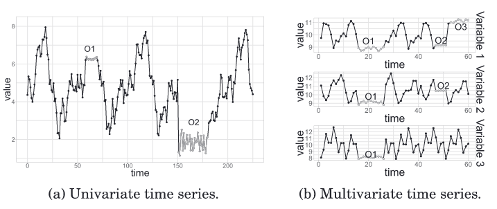

第1章 时序分析导论¶
时间序列数据在经济、金融、医学、气象等与生活息息相关的领域随处可见，而且工业界如物联网、医疗数字化和智慧城市等领域的兴起也产生了大规模的时间序列数据。可以预见，未来几年时间序列数据的数量、质量和数据分析的重要性将迅速增长。随着数据的监测和收集日益频繁和普遍，对基于统计和机器学习方法的时间序列分析的需求也越来越强。为此，本教程希望在接下来的章节中系统介绍时间序列分析的基础知识，特别是使用不同统计与机器学习方法进行时间序列的建模与应用。
1.1 时间序列分析简介¶
1.1.1 时间序列¶
时间序列在生活中随处可见，如下图所示，GDP增长情况、语音信号、录取分数线、股价指数等都属于时间序列数据。

可以发现，时间序列是按时间顺序排列的一系列数据点，可以描述为长度为n的观察值序列：
1.1.2 时间序列分析¶
时间序列分析是指从时间序列中抽取有价值的信息的工作。时间序列分析主要目的有两个：（1）诊断过去，分析序列的特性，探究潜在的影响因素；（2）预测未来，对未来序列进行预测和控制。
时间序列分析的类型：
-
（单变量）基于观察值序列\{x_1, x_2, ..., x_n\}进行时间序列分析
-
（多变量）基于输入-输出对序列\{(x_1,y_1), (x_2,y_2), ..., (x_n,y_n)\}进行时间序列分析（特征和输出之间的一致性关系）
-
（多变量）基于相关序列\{x_1, x_2, ..., x_n\}分析序列\{y_1, y_2, ..., y_n\}

时间序列分析的方法：
-
观察现象，即描述性时序分析。
-
拟合曲线，即时间序列建模。
沿着时间的发展，记录下随机变量的数据，通过直观的数据比较或绘图观察，寻找序列中蕴含的发展规律，这种分析方法被称为描述性时间序列分析。
1.1.3 时间序列分析的统计学定义¶
随机序列：按时间顺序排列的一组随机变量\{X_1, X_2, ..., X_n\}
观察值序列：随机序列的𝑛个有序观察值，称之为序列长度为𝑛的观察值序列\{x_1, x_2, ..., x_n\}
随机序列和观察值序列的关系：
- 观察值序列是随机序列的一个实现
- 时序分析的目的是想揭示随机时序的性质
- 实现的手段都是通过分析观察值序列的性质，由观察值序列的性质来推断随机序列的性质
1.1.4 时间序列分析的思路¶

1.2 时间序列分析发展简史¶
1.2.1 早期时间序列分析¶
在最开始，时间序列分析并不作为一个独立学科而存在，而是作为某些学科领域分析方法的一部分，因此有许多领域都对时间序列技术的发展起到了重要贡献，例如：医学、气象、经济、天文等。
医学：1901年，第一台实用的心电图（ECG）被发明出来，它可以通过心脏的电信号来诊断心脏状况，从此时间序列分析的研究进入了医学领域。1924年，随着测量人脑电信号的脑电图（EEG）的引入，为医学工作者创造了更多通过时间序列分析进行医学诊断的机会。随着可穿戴传感器和智能电子医疗设备的出现，人们可以不断地自动收集与个体健康相关的时间序列数据。
气象：1850年，罗伯特-菲茨罗伊（Robert FitzRoy）作为一个英国政府部门的负责人为水手们记录和发布与天气有关的数据。菲茨罗伊发明了“天气预报”一词，并率先在伦敦《泰晤士报》上发布天气预报信息。19世纪末，电报的出现使快速收集不同地点的气象信息成为可能，第一个气象数据集建立，被用于根据周边地理位置的情况预测当地天气。现在，许多国家政府从世界各地的成百上千个气象站进行高度精细化的天气测量，以气象站位置和设备的精确信息作为预测基础。
经济：19世纪末至20世纪初，美国和欧洲偶发的银行危机引发的焦虑促进了经济情况预测的发展。当时的企业家和研究人员从经济周期论的想法中得到启发，认为经济像天气一样可以进行预测从而避免崩溃。早期的经济预测工作导致了各类经济指标的产生，其中有些指标至今仍在使用。20世纪70年代起，随着大量经济数据的收集，产生了完全由统计（以及机器学习）模型驱动的时间序列分析。理查德-丹尼斯（Richard Dennis）是通过算法进行时间序列预测的先驱。丹尼斯给普通人传授的一些交易规则使他们获得了大量收益。这些规则与20世纪80年代的 "人工智能 "思想相呼应，其中的启发式方法仍然是人工智能的一个重要范式。
天文：天文学一直以来都非常依赖对物体及其轨迹的长时间的测量。例如，早在公元前800年，中国古代就记录了太阳黑子的历史活动数据，使太阳黑子成为记录最完整的自然现象之一。20世纪的许多重要天文学发现也跟时间序列数据的记录有关，如变星、超新星等。时间序列对我们所能测量的宇宙的认知产生了根本的影响。
1.2.2 基于统计学的时间序列分析¶
19世纪末-20世纪初，是现代时间序列分析方法萌芽期。一直到20世纪20年代，时间序列分析才正式脱离于其他学科独立发展，当时的一个标志是自回归模型的应用，这也奠定了基于统计学的时间序列分析的开端。
因素分解方法（Time Series Decomposition）：确定性因素分解由英国统计学家W.M. Persons于1919年在论文《Indices of Business Conditions》中首次使用，认为所有的序列波动都可以归纳为受到如下四大类因素的综合影响：
- 长期趋势（Secular Trends）。序列呈现出明显的长期递增或递减的变化趋势。
- 循环波动（Cyclical Fluctuations）。序列呈现出从低到高再由高到低的反复循环波动。循环周期可长可短，不一定是固定的。
- 季节性变化（Seasonal Variation）。序列呈现出和季节变化相关的稳定周期波动。
- 随机波动（Irregular Variation）。除了长期趋势、循环波动和季节性变化之外，其他不能用确定性因素解释的序列波动，都属于随机波动。
假定序列会受到这四个因素中的全部或部分的影响，导致序列呈现出不同的波动特征。换言之，任何一个时间序列都可以用这四个因素的某个函数进行拟合。
AR：英国实验物理学家George UdnyYule，将自回归模型应用于太阳黑子数据，提供了一种新的方法来思考数据。1927年，Yule在对单摆运动和太阳黑子序列的分析中，形成新观点：很多时间序列变量不是和时间相关，而是和同一序列中的滞后变量相关，提出了AR模型。
MA：苏联统计学家Eugen Slutsky探究随机扰动叠加之后模型及其性质，不同于把随机成分看做误差，Slutsky把随机成分视为扰动，且认为扰动也是数据产生过程中的一个重要部分，于1927年提出MA模型。
ARMA：1938年，瑞典统计学家Herman Wold在博士论文《A study in the Analysis of Stationary time Series》给出平稳随机过程的定义，提出了Wold分解定理，证明任何平稳序列都可以分解为确定性序列和随机序列之和，是构造ARMA模型拟合平稳序列的理论基础。
ARIMA：1962年，瑞典统计学家和保险精算学家Harald Cramer提出Cramer分解定理，它是Wold分解定理的理论推广，是非平稳序列的分解理论，是构造ARIMA模型的理论基础。
1.2.3 基于机器学习的时间序列分析¶
基于机器学习的时间序列分析则最早开始于1969年，集成方法被应用于时间序列数据上。到了80年代，更多应用场景涌现出来，如异常检测、动态时间规整、循环神经网络等。时间序列分析和预测尚未达到其黄金时期，到目前为止，时间序列分析仍然由传统的统计方法和较简单的机器学习技术主导。
本章小结¶
- 时间序列是按时间顺序排列的一系列数据点，可以描述为长度为n的观察值序列：{x1,x2,...,xn}
- 时间序列分为单变量时间序列和多变量时间序列，时间序列分析的方法包括描述现象和拟合曲线。
- 医学、气象、经济、天文等领域都对时间序列技术的发展起到了重要贡献。
- 20世纪20年代，基于统计的时间序列分析快速发展，时间序列分析正式脱离于其他学科。
- 基于机器学习的时间序列分析则开始于20世纪70年代后。
本章参考资料¶
[1] 南京大学Lambda-时间序列分析 https://www.lamda.nju.edu.cn/yehj/timeseries2021/?AspxAutoDetectCookieSupport=1
[2] Practical Time Series Analysis Prediction with Statistics & Machine Learning https://b-ok.cc/book/5336102/85751e
[3] Time Series 101 https://github.com/skywateryang/timeseries101
[4] A Review on Outlier/Anomaly Detection in Time Series Data https://arxiv.org/abs/2002.04236